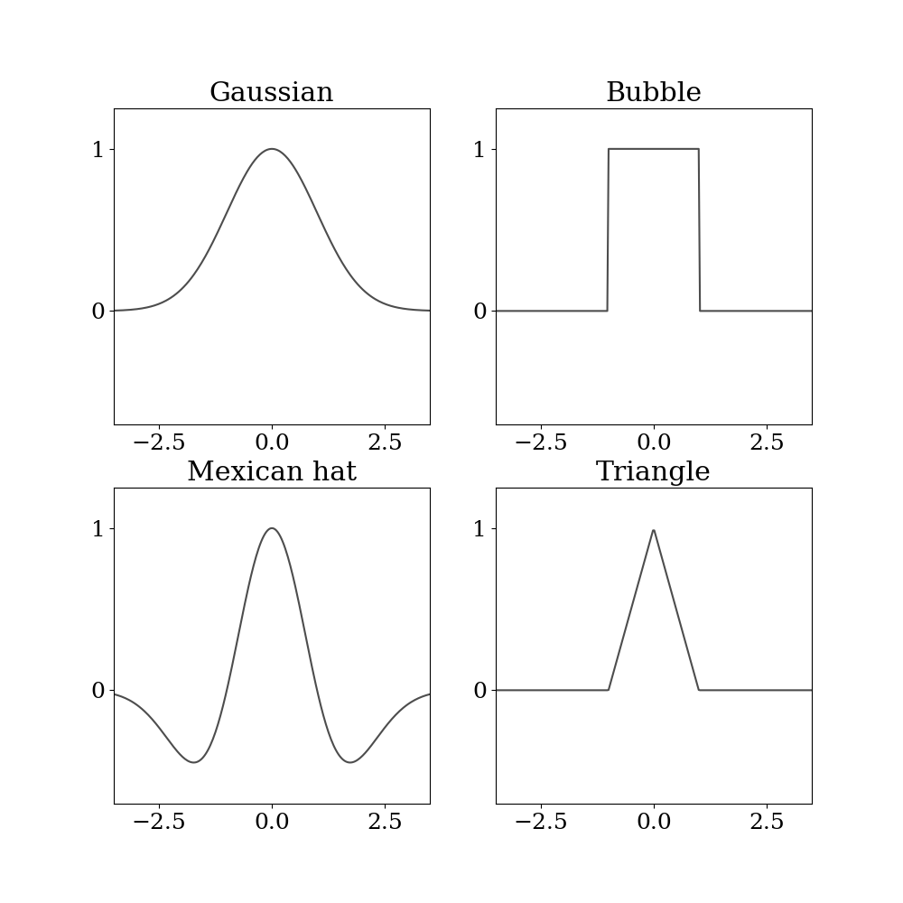

Note
Click here to download the full example code
SOM neighbourhood functions¶
7 8 9 10 11 12 13 14 15 16 17 18 19 20 21 22 23 24 25 26 27 28 29 30 31 32 33 34 35 36 37 38 39 40 41 42 43 44 45 46 47 48 49 50 51 52 53 54 55 56 57 58 59 60 61 62 63 64 65 66 67 68 69 70 71 72 73 | import numpy as np
import seaborn as sns
import matplotlib
import matplotlib.pyplot as plt
# matplotlib.use("pgf")
matplotlib.rcParams.update({
# "pgf.texsystem": "pdflatex",
'font.family': 'serif',
# 'text.usetex': True,
'font.size': 18,
'pgf.rcfonts': False
})
def gaussian(x, c, sigma):
"""Returns a Gaussian centered in c."""
d = 2 * sigma * sigma
y = np.exp(-np.power(x - c, 2) / d)
return y
def mexican_hat(x, c, sigma):
"""Mexican hat centered in c."""
p = np.power(x - c, 2)
d = 2 * sigma * sigma
return (np.exp(-p / d) * (1 - 2 / d * p)).T
def bubble(x, c, sigma):
"""Constant function centered in c with spread sigma."""
y = np.logical_and(x > c - sigma, x < c + sigma)
return y
def triangle(x, c, sigma):
"""Triangular function centered in c with spread sigma."""
triangle_x = (-abs(c - x)) + sigma
triangle_x[triangle_x < 0] = 0.
return triangle_x
points = 250
x = np.linspace(-3.5, 3.5, num=points)
fig, axes = plt.subplots(2, 2, figsize=(10, 10))
axes = axes.flatten()
for ax in axes:
ax.set_box_aspect(1)
ax.set(xlim=(-3.5, 3.5), ylim=(-0.7, 1.25))
ax.xaxis.set_major_locator(plt.MaxNLocator(3))
ax.yaxis.set_major_locator(plt.MaxNLocator(2))
sns.lineplot(ax=axes[0], x=x, y=gaussian(x,0,1), color=".3")
axes[0].set_title(r'Gaussian')
sns.lineplot(ax=axes[1], x=x, y=bubble(x,0,1), color=".3")
axes[1].set_title(r'Bubble')
sns.lineplot(ax=axes[2], x=x, y=mexican_hat(x,0,1), color=".3")
axes[2].set_title(r'Mexican hat')
sns.lineplot(ax=axes[3], x=x, y=triangle(x,0,1), color=".3")
axes[3].set_title(r'Triangle')
# fig.savefig("som_nh_functions.pdf", bbox_inches='tight')
plt.show()
|
Total running time of the script: ( 0 minutes 0.243 seconds)